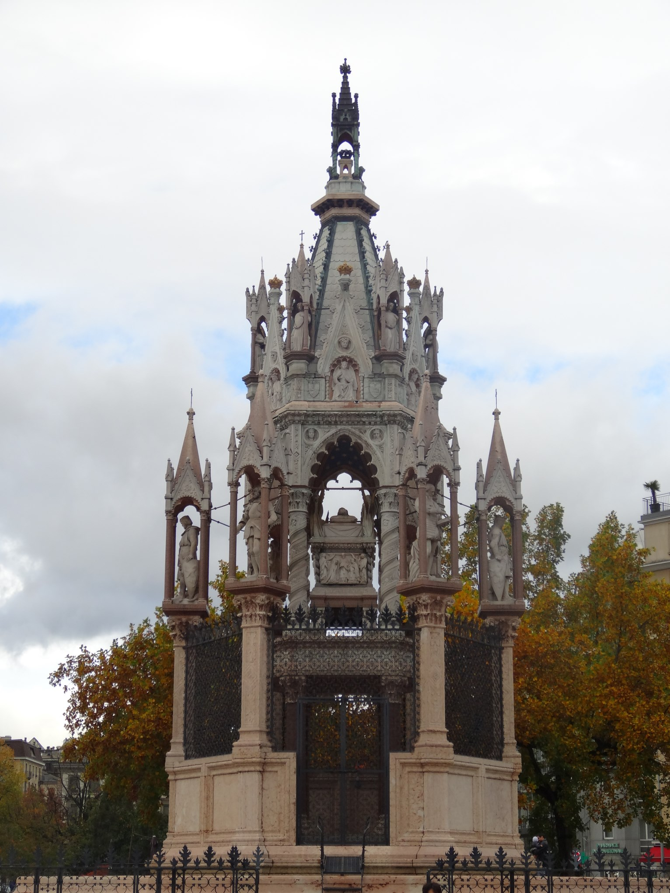
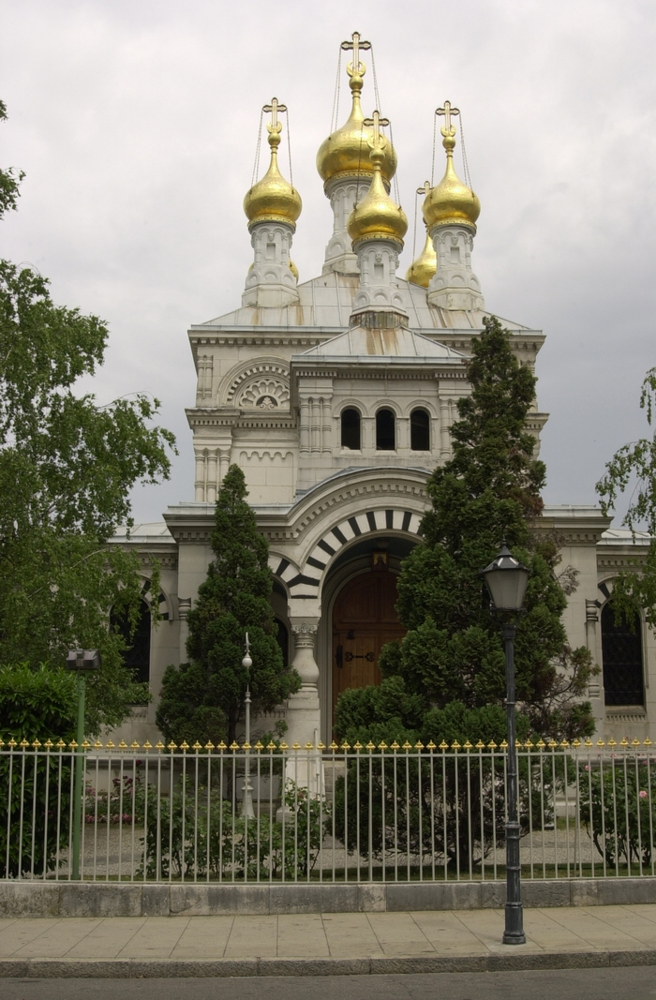
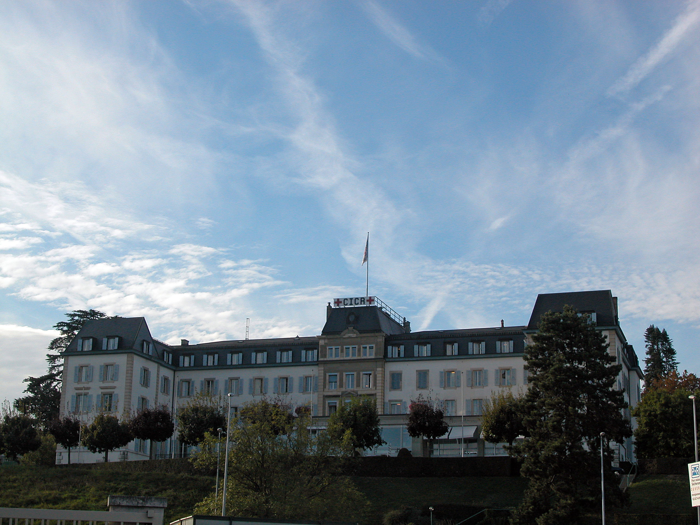
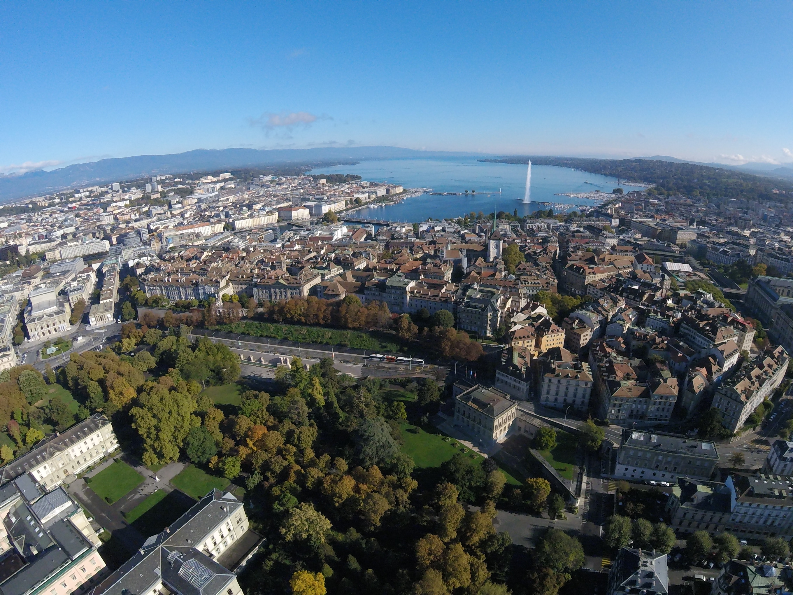
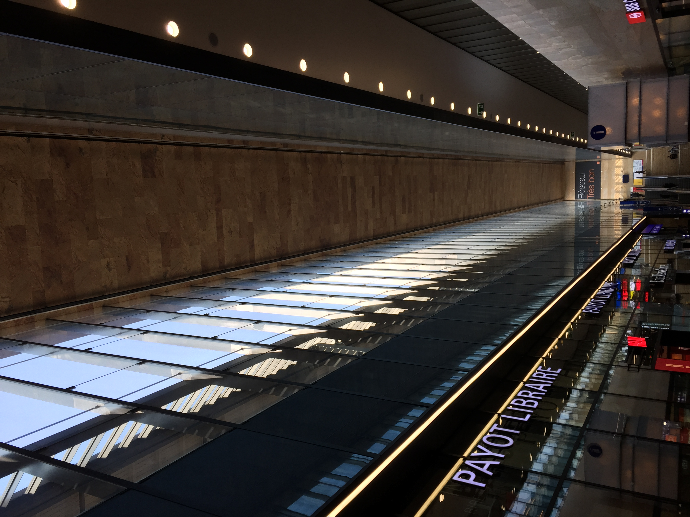
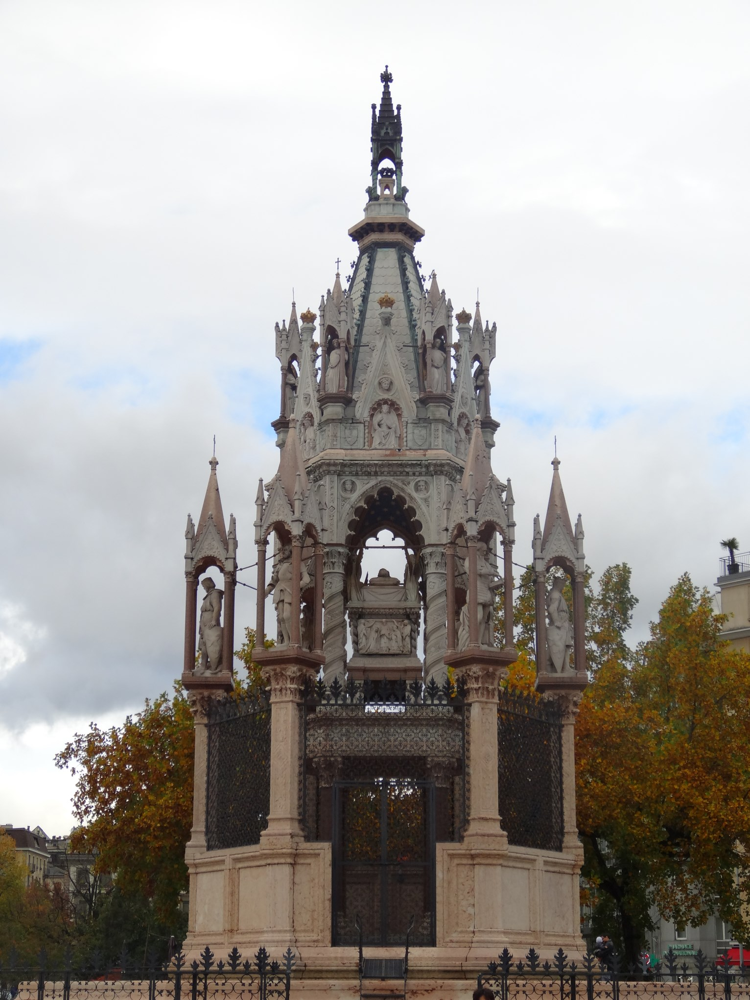
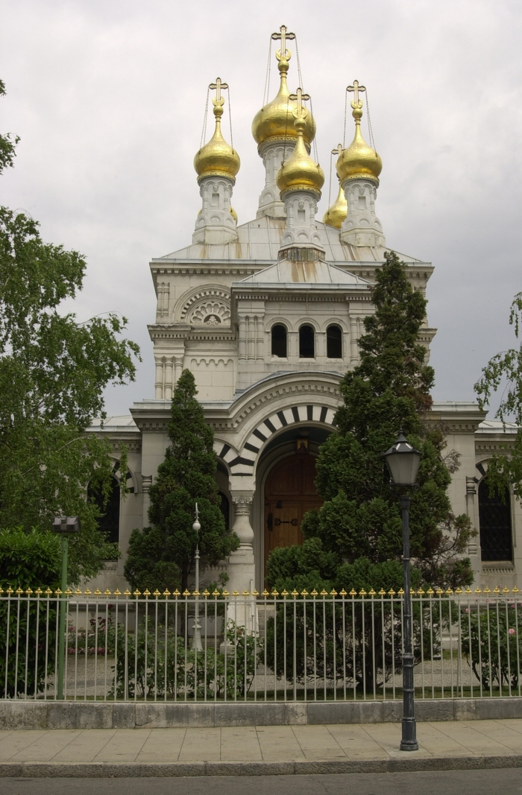
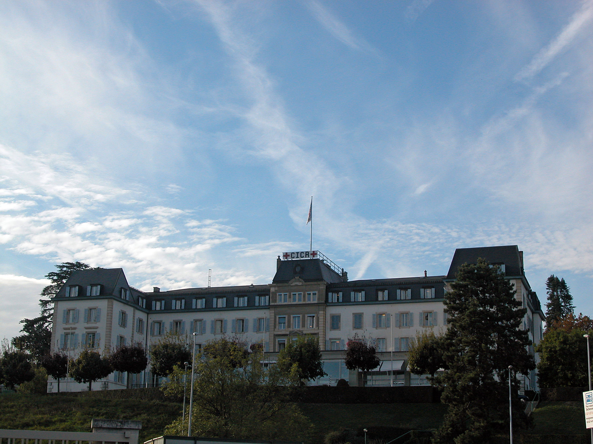
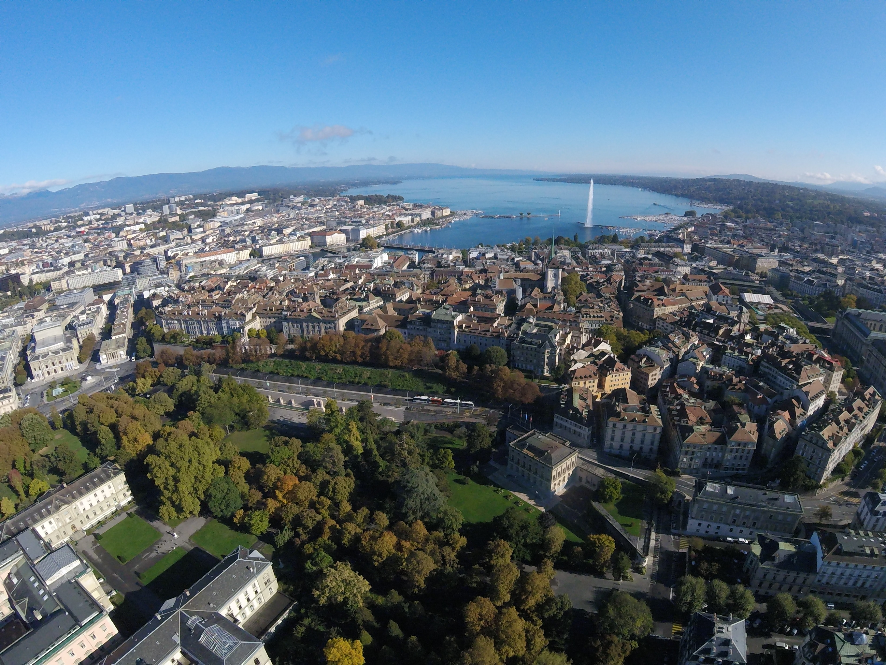
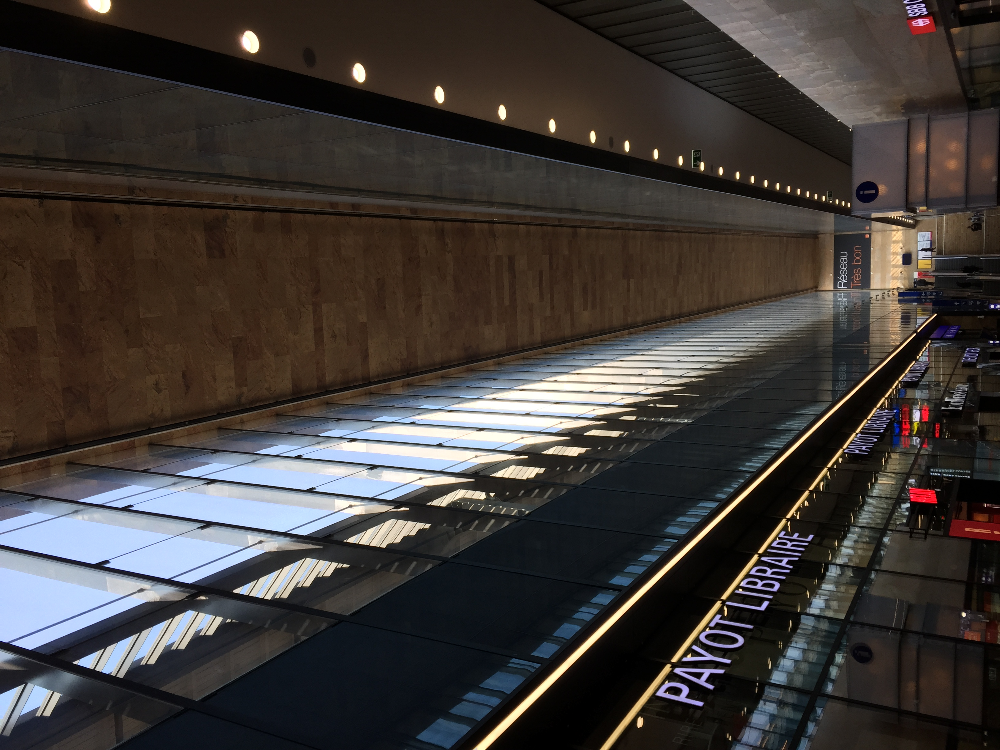

.jpg)
Geneva is the second-most populous city in Switzerland (after Zürich) and the most populous city of Romandy, the French-speaking part of Switzerland. Situated where the Rhône exits Lake Geneva, it is the capital of the Republic and Canton of Geneva.Geneva is a global city, a financial centre, and a worldwide centre for diplomacy due to the presence of numerous international organizations, including the headquarters of many agencies of the United Nations and the Red Cross.
Geneva hosts the highest number of international organizations in the world. It is also where the Geneva Conventions were signed, which chiefly concern the treatment of wartime non-combatants and prisoners of war. Together with, for instance, New York City (global headquarters of the UN), Basel (Bank for International Settlements), and Strasbourg (Council of Europe), Geneva is a city serving as the headquarters of one of the most important international organizations, without being the capital of a country. In 2021, Geneva was ranked as the world's ninth most important financial centre for competitiveness by the Global Financial Centres Index, fifth in Europe behind London, Zürich, Frankfurt and Luxembourg. The city has been referred to as the world's most compact metropolis and the "Peace Capital". In 2019, Mercer ranked Geneva as the thirteenth most expensive city in the world. In a UBS ranking of global cities in 2018, Geneva was ranked first for gross earnings, second most expensive, and fourth in purchasing power.
While many visitors are drawn almost instinctively to Geneva and its list of fabulous sights such as the famous Jet d’Eau and its marvellous Old Town, the rest of the Lake Geneva Region is awash with beautiful nature for you to discover and so it is definitely worth venturing further afield. As it is partially surrounded by France, the region’s three main cities of interest – Geneva, Lausanne and Montreux – are all French speaking and each of them lies on the shores of the stunning Lake Geneva. This means you can take a scenic cruise around the lake from one to the other and bask in the amazing scenery you pass along the way before stopping off to explore their many sights. Whether it is taking a cable car up to the top of Mont Saleve and taking in the astounding views of the Jura Mountains and Mont Blanc, hiking along the fantastic trails and paths that weave their way around the mountains in Hauts-de-Montreux or visiting some of the vineyards and wineries that surround Lausanne; the Lake Geneva Region is not to be missed out on when travelling around Switzerland.
love and kind regards, the SWITZOURIST team.
 










_Gen%C3%A8ve.jpg)


.jpg)